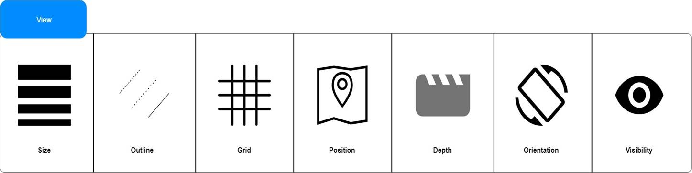
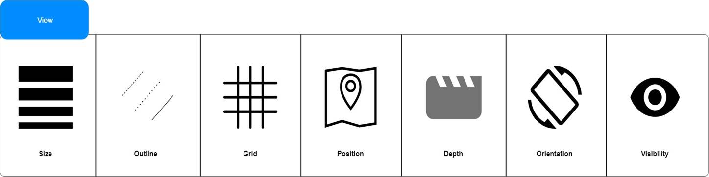
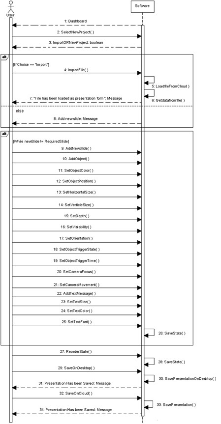
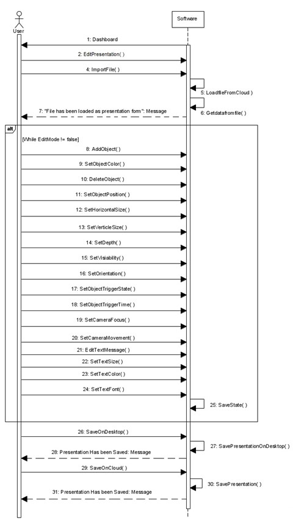

Specification
Document
1. Use Case Diagrams
2. State Diagram

3. Use Cases
Presentation
Development
Subject: Prezoom
Requirement address: T1
Actors involved: Presentation developer
Precondition: The system will start a new system.
Typical flow :
The system will prompts the user whether to start a presentation or edit it.
Edit Presentation
Add objects
Subject: Prezoom
Requirement address: T3
Actors involved: Editor
Precondition:. add objects,add attributes
Typical
flow : Editor can add objects to the presentation.
Add attributes
Subject: Prezoom
Requirement address: T5
Actors involved: Editor
Precondition: add attributes
Typical
flow : Editor add attributes to an object.Like
color,size,They can change the diffrent color,size etc.
Time Duration
Subject: Prezoom
Requirement address: T13
Actors involved: Editor
Precondition: modify time duration
Typical
flow : The Editor can set or change
the time duration.
Delete Option
Subject: Prezoom
Requirement address: T10,T4
Actors involved: Editor
Precondition: Delete state,object
Typical
flow : The Editor can Delete the
state
Modify Option
Subject: Prezoom
Requirement address: T11
Actors involved: Editor
Precondition: Modify
Typical flow : The Editor can modify the state
Add state
Subject: Prezoom
Requirement address: T9
Actors involved: Editor
Precondition: Add state
Typical
flow : The Editor can add the state
Save Option
Subject: Prezoom
Requirement address: T15
Actors involved: Editor
Precondition: Save
Typical
flow : Edit the presentation can
save the presention
View Option
Subject: Prezoom
Requirement address: T12
Actors involved: Editor
Precondition: View
Typical flow : Editor
can Edit the presentation can view the presention
Presentation Phase
Slide movement
Subject: Prezoom
Requirement address: T16,T17,T18,T19
Actors involved: Presenter
Precondition: move First,Last,Backward,Forward
Typical
flow : During presentation the
prsenter can move the presentation from
last, first forward, backward using timeline.
Auto
presentation
Subject: Prezoom
Requirement address:T20
Actors involved: Presenter
Precondition: auto presentation
Typical
flow : The prsenter can also
enable auto presentation using the timeline.
Transitions
Subject: Prezoom
Requirement address:T20,T25
Actors involved: Presenter
Precondition: Transitions
Typical
flow : The prsenter can also do
research on visualisation of sequence of states and transitions using the timeline.
Camera movement
Subject: Prezoom
Requirement address:T22
Actors involved: Presenter
Precondition: camera moves left or right.
Typical
flow : The prsenter can move the
camera to the left or the right.
Portion
Subject: Prezoom
Requirement address:T23
Actors involved: Presenter
Precondition: Portion or divide
Typical
flow : The prsenter can portion
the background sheet.
Orientation
Subject: Prezoom
Requirement address:T24
Actors involved: Presenter
Precondition: Change Orientation
Typical
flow :The prsenter can modify the orientation,vertical or horizontal, of
the camera.
Modification of
interpolation
Subject: Prezoom
Requirement address:T26
Actors involved: Presenter
Precondition: modify the interpolation
Typical
flow :The prsenter can Load the presentation,modify the interpolation.
4. User Stories
Subject :
Prezoom Project
Actors Involve :
The User and The System
Requirements
Addressed : R0, R1
Precondition :
The system has not started yet.
Typical flow :
T0 :
The user requests the system to start the prezoom project by clicking the
systems start menu.
T1 :
The system will start a new system.
T2 :
The system will prompts the user wheather to open
a presentation or create a new presentation.
Edit
Presentation :
T3 :
Edit the presentation can add objects.
T4 :
Edit the presentation can delete the added object.
T5 :
Edit the presentation can add attributes to an object.
T6 :
Edit the presentation can delete an attribute from an object.
T7 :
Edit the presentation can add interpolation to an object.
T8 :
Edit the presentation can modify an attribute.
T9 :
Edit the presentation can add state.
T10 :
Edit the presentation can delete state.
T11 :
Edit the presentation can modify state.
T12 :
Edit the presentation can view state.
T13 :
Edit the presentation can change the duration.
T14 :
Edit the presentation can change the mode to edit presentation.
T15 :
Edit the presentation can save the presention
If the user wants to
present the presentation, the user will select start to present the
presentation.
T16 :
Load presentation can move back using the timeline.
T17 :
Load presentation can move forward using the timeline.
T18 :
Load presentation can move to the first slide using the timeline.
T19 :
Load presentation can move to the last slide using the timeline.
T20 :
Load presentation can enable auto presentation using the timeline.
T21 :
Load presentation can research on visualisation of sequence of states and
transitions using the timeline.
T22 : Load
presentation can move the camera to the left or the right.
T23 :
Load presentation can portion the background sheet.
T24 :
Load presentation can modify the orientation,vertical or horizontal, of the
camera.
T25 :
Load presentation can change the transition.
T26 :
Load presentation,modify the interpolation.
5. Wireframe Diagrams
 

6. Sequence Diagrams
